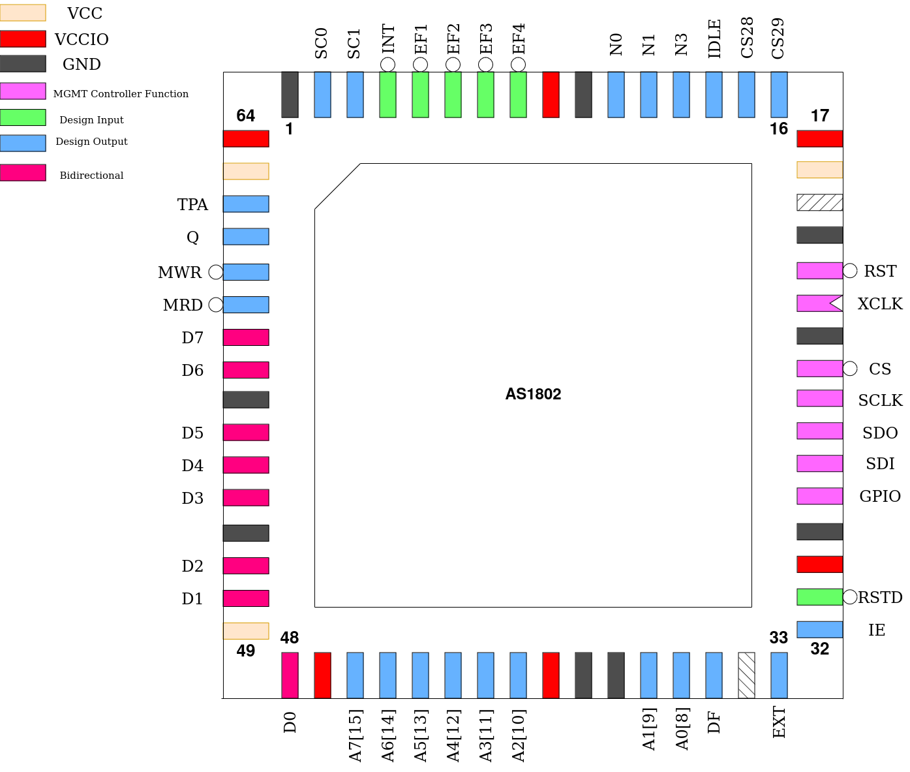

AS1802
This design is a binary-compatible replica of the CDP1802 microprocessor. It is, however, not bus-cycle accurate and thus distinguished with a different letter prefix in its name. Instead, this is a more optimized implementation with faster machine- and bus-cycles, executing most instructions in 1 or 2 clock cycles after a 2 or 3 clock cycle fetch.
The instruction set has also been extended, though this does not break backwards compatibility with the original CDP1802 bytecode.
Any pins not directly used by the processor have been assigned to expose some of the processor’s internal state for debugging (and blinkenlights).
DMA is currently not implemented.
Pinout
Pin # |
Name |
Type |
Summary |
|---|---|---|---|
|
RSTD |
I |
Active low design reset |
|
IE |
O |
Interrupt Enable state |
|
EXT |
O |
Extended ISA Cycle flag |
|
DF |
O |
Accumulator Flag state |
|
A[7:0] / A[15:8] |
O |
Multiplexed Address Bus |
|
D[7:0] |
IO |
Bi-directional Data Bus |
|
MRD |
O |
Memory Read Enable |
|
MWR |
O |
Memory Write Strobe |
|
Q |
O |
Q-Latch |
|
TPA |
O |
High Address Strobe |
|
SC[1:0] |
O |
Processor Status Code |
|
INT |
I |
Interrupt Request |
|
EF[4:1] |
I |
Event Flag general-purpose inputs |
|
N[2:0] |
O |
IO Instruction Address Bus |
|
IDLE |
O |
Processor Idle state indicator |
|
CS[29:28] |
O |
Mirror of custom_settings[29:28] |
Memory Bus
The signaling for memory accesses is almost identical to the CDP1802, with the 16-bit address being multiplexed on 8 pins, using TPA to indicate when the most-significant byte is emitted and needs to be latched.
The only changes are less overall clock cycles to complete a bus cycle and that the processor now internally keeps track of what MSB address value was last latched, and skips emitting the MSB if it has not changed, saving a clock cycle.
Timings of an instruction fetch and execution resulting in a write to the same 256-byte region and fetch of the following instruction.
Extended Instructions
The original CDP1802 had only one unused opcode, 86h, which is used in the AS1802 as a prefix for the extended instructions. These are as follows.
Most importantly, hardware multiple/divide instructions were added which each take only 1 clock cycle to execute. To facilitate this, one additional 8-bit register has been added to the AS1802: MHI (Muldiv High byte).
SWAP
Opcode: 86h 7Bh
Swap nibbles.
Swaps the most significant and least significant 4-bit halves of D atomically.
CMHI
Opcode: 86h A0h
Clear MHI.
Clears MHI to 0.
LMHI
Opcode: 86h A1h
Load MHI.
Copies the value of D into MHI.
GMHI
Opcode: 86h 90h
Get MHI.
Copies the value of MHI into D.
PXN
Opcode: 86h Bnh
Put into X Rn.
Copies the value of a general-purpose register n into the current X register.
DBNZ
Opcode: 86h 2nh
Decrement Rn and long-branch if not zero.
Decrements the value of a general-purpose register n and long-branches if the new register value is not equal to 0.
MUL
Opcode: 86h F4h
Multiply.
Multiplies D and a value from memory pointed to by the current X register. The result is 16-bits wide, with the LSB stored in D and the MSB stored in MHI.
MLI
Opcode: 86h FCh
Multiply immediate.
Multiplies D and a immediate value from the instruction. The result is 16-bits wide, with the LSB stored in D and the MSB stored in MHI.
DIV
Opcode: 86h F5h
Divide.
Divides a 16-bit value formed by concatenating MHI (MSB) and D (LSB) by a 8-bit value from memory pointed to by the current X register. The result is 16-bits wide, with the LSB stored in D and the MSB stored in MHI.
DVI
Opcode: 86h FDh
Divide immediate.
Divides a 16-bit value formed by concatenating MHI (MSB) and D (LSB) by a 8-bit immediate value from the instruction. The result is 16-bits wide, with the LSB stored in D and the MSB stored in MHI.
MOD
Opcode: 86h F3h
Modulo.
Computes the remainder of a division of a 16-bit value formed by concatenating MHI (MSB) and D (LSB) by a 8-bit value from memory pointed to by the current X register. The result is 8-bits wide and stored in D.
MDI
Opcode: 86h FBh
Modulo immediate.
Computes the remainder of a division of a 16-bit value formed by concatenating MHI (MSB) and D (LSB) by a 8-bit immediate value from the instruction. The result is 8-bits wide and stored in D.
Custom Settings
This design makes extensive use of the custom settings register as follows:
PC determines the initial value of the Program Counter when the processor is reset.
X and P determine the initial values of the X and P registers when the processor is reset.
As custom settings is reset to 0 on regular power-up, the behavior of the original CDP1802 is set by default.
MWR determines the shape of the MWR signal. With its default value of 0, this signal stretches a full clock cycle. Other possible settings are:
1: WEb strobes only during the low period of the clock
2: WEb strobes only during the high period of the clock
TR, if set, additionally gates the signal MRD by the value of TPA, forcing it into the inactive state when TPA is active. This is strangely not the default behavior on the CDP1802.
TW, if set, additionally gates the signal MWR by the value of TPA, but this should not be required as these signals never overlap.
CS determines the state of the CS[29:28] pins.